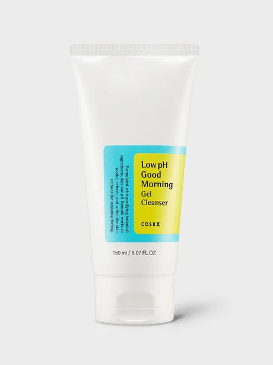
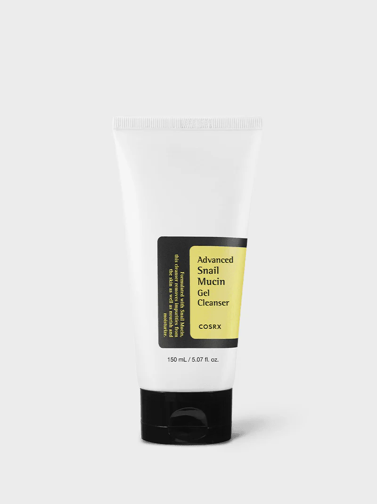
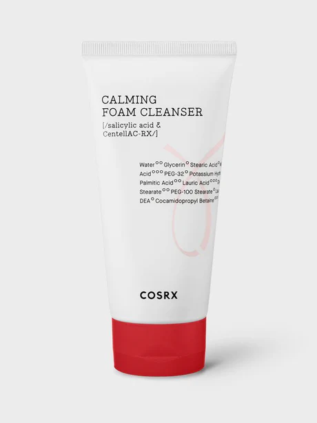
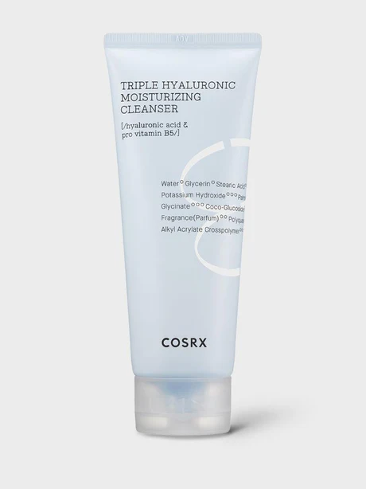
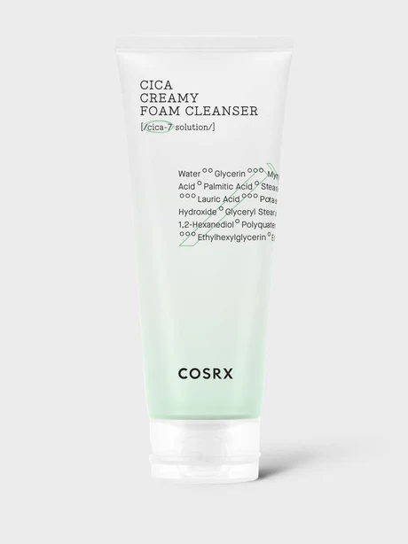
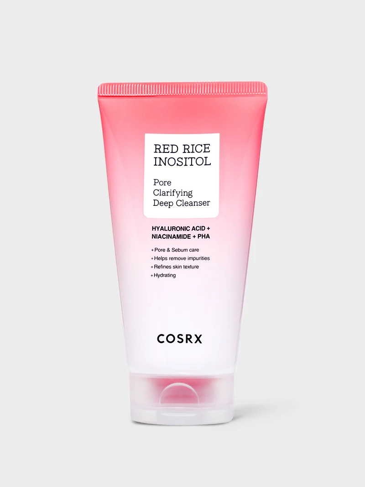

Our Products
Browse our full...........
| Category | Image | Product Information | Price | Action | ||
|---|---|---|---|---|---|---|
| Code | Name | Description | ||||
| Cleasnser |  |
C001 | Low pH Good Morning Gel Cleanser | Gentle gel type cleanser with mildly acidic pH level While refining the skin texture, the cleanser will help cleanse with no stripping. Great for all skin types, wake up to a firmer-looking skin while letting it rest clean during the night. Size: 5.07fl. Oz/ 150mL |
$12.60 | inquire |
 |
C002 | Advanced Snail Mucin Gel Cleanser | Smoothest lather supercharged with Snail Mucin! Specially formulated gel cleanser enriched with skin beneficial ingredients including snail mucin to hydrate and protect the skin. Size: 5.07 fl. Oz/150mL |
$18.00 | inquire | |
 |
C003 | AC Collection Calming Foam | Visibly clearer skin & never stripped! Smart, daily acne cleanser that provides both freshness and moisture with gentle foam. Size: 5.07 fl. Oz/ 150mL |
$15.00 | inquire | |
 |
C004 | Hydrium Triple Hyaluronic Moisturizing Cleanser | Vitamin B5 and three types of hyaluronic acid work to lock-in hydration! First step foam cleanser, which creates a rich lather of cushion bubbles, that helps to create the perfect cleanse and provides a moist finish with the help of triple hyaluronic acids. /Size: 5.07 fl. Oz/ 150mL |
$18.00 | inquire | |
 |
C005 | Pure Fit Cica Creamy Foam Cleanser | Rich and luxurious foam for pleasant and satisfying cleanse A creamy foam cleanser with Pure Fit Cica-7 Complex to protect the skin while whisking away dirt and impurities, leaving the skin feeling fresh and clean. Size : 0.67 fl.oz / 20mL |
$18.00 | inquire | |
 |
C006 | Cosrx Red Rice Inositol Pore Clarifying Deep Cleanser | #FaceMaskToFoam #DeepCleansing #RedRice A Low pH cleanser with a stretchy, bouncy texture that adheres closely to the skin to lift away impurities and excess sebum, leaving the skin smooth and clarified. Size: 150mL/ 5.07 fl. Oz |
$20.00 | inquire | |
 |
C006 | Cosrx Salicylic Acid Daily Gentle Cleanser | COSRX Salicylic Acid Daily Gentle Cleanser is a foam cleanser for oily skin, containing botanical purifying ingredients and salicylic acid to take care of excess dead skin cells and sebum. Size: 150mL/ 5.07 fl. Oz |
$13.5 | inquire | |
| Moisturizer |  |
M001 | Advanced Snail 92 All in One Cream | K-Beauty Favorite Cream for Boosting Elasticity The Advanced Snail 92 All In One Cream by COSRX helps repair stressed skin barriers and boost elasticity with 92% snail mucin. Designed for all skin types, especially sensitive or dry skin, it delivers deep hydration and nourishment without heaviness, leaving the skin smooth, resilient, and glowing with a “Glass Skin” finish. Type : Tube, Jar Size: 50g (1.76 oz) |
$15.00 | inquire |
 |
M002 | Centella Blemish Cream | Centella eraser for all red and dark traces Jar type cream which makes the red and dull spots disappear left from acne. Size: 1.05 fl.oz / 30g |
$21.00 | inquire | |
 |
M003 | Hyaluronic Acid Intensive Cream | Feel the supple skin all day long! Intensely hydrating cream boosts moisture content in your skin and seals it inside, protecting your skin from further loss of hydration. Without feeling oily or heavy, this intensively hydrating cream makes the skin feel soft like clouds and provides long-lasting moisture. Size : 3.52 oz / 100g |
$25.00 | inquire | |
 |
M004 | Pure Fit Cica Cream | Strong skin barrier with thick Cica Cream Intense What it is: Moisturizing cica cream infused with 7 types of centella extract to soothe sensitive skin and provide deep hydration. Size: 1.7 fl.oz / 50ml |
$27.20 | inquire | |
 |
M005 | Refresh AHA/BHA Vitamin C Daily Cream | Soothing, Calming, Strengthening, Protecting Pure Fit CICA-7 Complex 58.6%, Cica cream calms sensitive skin comfortably and helps recover skin quickly. |
$13.30 | inquire | |
 |
M006 | The Ceramide Skin Barrier Moisturizer | Barrier-Repairing Moisturizer for Sensitive Skin The Ceramide Skin Barrier Moisturizer by COSRX replenishes the moisture barrier with a powerful blend of 7 ceramides, cholesterol, fatty acids, and 5 types of hyaluronic acid. Specially formulated for dry, sensitive, or irritation-prone skin, it deeply hydrates and locks in moisture without heaviness, leaving skin calm, smooth, and visibly stronger with every use. Size: 80mL (2.70 fl.oz) |
$23.00 | inquire | |
| Sunscreen |  |
S001 | Airy Light Invisible Sun Stick | #High Protection SPF 50 PA ++++ with Airy Light Texture A lightweight, transparent sunscreen stick that glides on effortlessly to provide powerful UV protection without a white cast, leaving a powdery soft-matte finish for all-day comfort and convenient on-the-go use. |
$23.00 | inquire |
 |
S002 | All Day Sun Protection Duo | One set, all-day coverage with SPF 50 Protection All-day SPF 50+ coverage, simplified. A no-white-cast vitamin E cream keeps skin hydrated and protected, while a clear sweat-proof stick makes reapplication effortless — anytime, anywhere. Size: 50mL/ 1.69 fl. Oz |
$39.10 | inquire | |
 |
S003 | Aloe 54.2 Aqua Tone-up Sunscreen SPF 50+ PA++++ | Infused with aloe barbadensis leaf water, the lightweight sunscreen protects against harmful UV rays and soothes sunburn while providing a soft, non-greasy appearance all day. Size: 50mL/ 1.69 fl. Oz |
$18.00 | inquire | |
 |
S004 | Aloe Soothing Sun Cream SPF50 PA+++ | Is this moisturizer? No, it's sunscreen! Formulated with Aloe Arborescens Leaf Extract, the daily soothing sunblock is so lightweight that is feels like a moisturizer, and it does not leave any white cast. Designed to be travel friendly, you can easily carry COSRX Aloe Soothing Sun Cream anywhere and layer on sun protection anytime. Size : 1.69 fl.oz / 50mL |
$16.00 | inquire | |
| S005 | COSRX AIRY-LIGHT CLEAR SUNSCREEN STICK | #Broad-Spectrum SPF 50 Protection With A Clear, Airy-Light Texture An airy, transparent formula glides on smoothly without a white cast, providing powerful UV protection with waterproof resistance to water and sweat—all in a portable sunscreen stick. |
$18.40 | inquire | ||
 |
S006 | Ultra-Light Invisible Sunscreen SPF50 PA++++ | #100% Invisible #Perfect Protection Amazing Lightness! A sheer and transparent formula absorbs quickly without any white cast, providing a refreshing finish for hydrating sunscreen. Size : 50mL / 1.69 fl. Oz |
$16.00 | inquire | |
 |
S007 | Vitamin E Vitalizing Sunscreen SPF 50+ | Lightweight Vitamin E Sunscreen for All Skin Tones This broad-spectrum SPF 50+ sunscreen protects against UV damage while hydrating with vitamin E, cocoa, and cotton seed extracts. The non-greasy, no white-cast finish layers seamlessly under makeup and flatters all skin tones, leaving skin smooth, balanced, and protected all day. Size : 50mL / 1.69 fl. Oz |
$23.00 | inquire | |
| Summary | $393.1 | 20 items | ||||
| Free shipping on orders over $100. Contact us for wholesale pricing. | ||||||